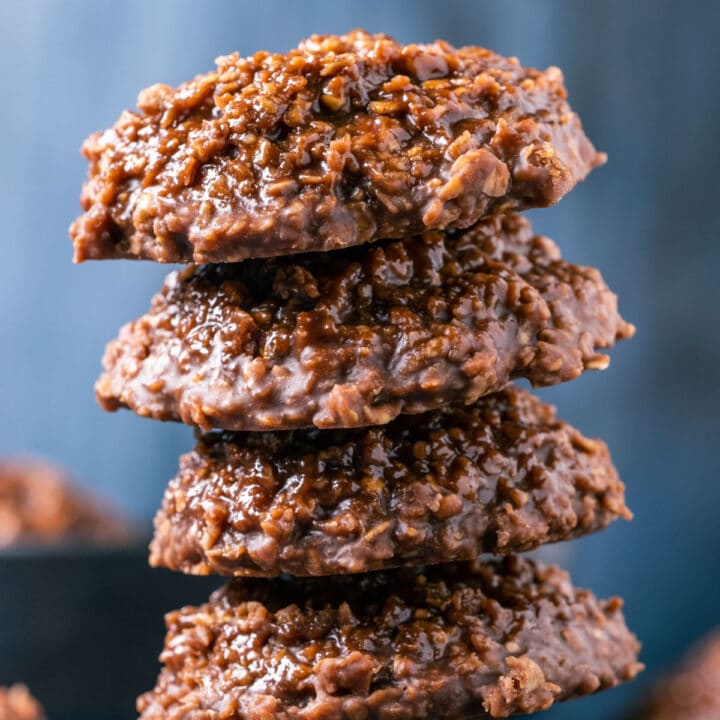

Ingredients
- 1/2 cup vegan butter
- 2 cups white sugar
- 1/2 cup soy milk
- 1/4 cup cocoa powder
- 1/2 cup peanut butter
- 1 tsp vanilla extract
- 3 3/4 cups quick cooking oats
Steps
- Prepare and measure out all your ingredients before you start. Have a timer ready and line two baking sheets with parchment paper.
- Add vegan butter, white granulated sugar, soy milk and cocoa powder to a saucepan and heat it over medium heat, stirring all the while until everything is melted and well combined.
- Bring the mix to a full rolling boil and then set a timer for 60 seconds and let it boil for the full 60 seconds, stirring occasionally,
- Remove it from the heat and add the vanilla extract and the peanut butter. Whisk it in until well combined.
- Add the quick cooking oats and stir in very well until all the oats are well covered.
- Use a cookie scoop to scoop the mixture out onto your parchment lined baking sheets.
- Allow to set at room temperature for 30 minutes or place it into the fridge to set.